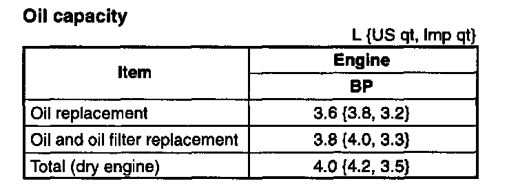

Engine Oil: Service and Repair
ENGINE OIL REPLACEMENTWarning:
^ When the engine and the engine oil are hot, they can badly burn. Don't burn yourself with either.
^ A vehicle that is lifted but not securely supported on safety stands is dangerous. It can slip or fall, causing death or serious injury. Never work around or under a lifted vehicle if it is not securely supported on safety stands.
^ Continuous exposure with USED engine oil has caused skin cancer in laboratory mice. Protect your skin by washing with soap and water immediately after this work.
1. Position the vehicle on level ground.
2. Remove the oil filler cap and the oil pan drain plug.
3. Drain the oil into a container.
4. Install a new gasket and the drain plug.
Tightening torque: 30 - 41 Nm (3.0 - 4.2 kgf.m, 22 - 30 ft. lbs.)

5. Refill the engine with the specified type and amount of engine oil.
6. Refit the oil filler cap.
7. Run the engine and inspect for oil leakage.
8. Inspect the oil level and add oil as necessary.
Note:
^ The actual oil level may vary from the specified capacity in some cases.